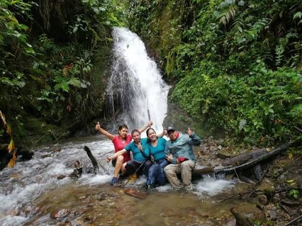

How technology improves communication, education, agriculture, tourism, and quality of life.
Lloa is a rural parish located southwest of Quito, Ecuador. It is recognized for its natural beauty, agricultural activities, and growing tourism sector. In recent years, technology has become a fundamental tool for improving the quality of life of its residents and supporting the development of the community. The use of digital devices, internet services, and communication technologies has transformed the way people work, study, communicate, and access information.
Technological advancements have allowed people to obtain information more quickly, communicate with family members who live far away, improve productive activities, and promote local tourist attractions. Technology has also helped small businesses advertise their products and services online, increasing their visibility and attracting new customers. As a result, technology has become an essential part of daily life in Lloa and continues to create new opportunities for social and economic growth.
One of the most significant changes that technology has brought to Lloa is the improvement in communication. In the past, people depended mainly on face-to-face conversations or traditional telephone services. Today, many residents use smartphones, messaging applications, and social media platforms such as WhatsApp, Facebook, Instagram, and TikTok to stay connected.
Internet access allows residents to communicate instantly with relatives, friends, businesses, and local authorities. Information can be shared quickly, making it easier to organize community activities, announce important events, and respond to emergencies. Communication technologies also allow local entrepreneurs to interact directly with their customers, answer questions, and promote their products and services efficiently.
In addition, technology enables people to participate in virtual meetings, online workshops, and digital events without having to travel long distances. This is especially important in rural areas where transportation may not always be readily available. As a result, communication technologies help strengthen social connections and improve access to information.
Education has benefited significantly from the use of technology in Lloa. Students now have access to a wide variety of educational resources, including online libraries, educational videos, virtual classrooms, and interactive learning platforms. These tools allow students to expand their knowledge beyond traditional textbooks and explore topics in greater depth.
Teachers also benefit from technology by using digital tools to prepare lessons, create presentations, and share educational materials. Through online platforms, teachers can provide assignments, monitor student progress, and maintain communication with parents and students.
Technology encourages independent learning and helps students develop important digital skills that will be valuable in their future careers. Many students can participate in online courses, educational competitions, and virtual training programs that broaden their educational opportunities. Access to technology also promotes creativity, critical thinking, and problem-solving abilities, which are essential skills in today's world.
Furthermore, technology helps reduce educational barriers by making information available at any time and from almost anywhere. This contributes to a more inclusive and accessible learning environment for students in rural communities like Lloa.
Agriculture and livestock farming are among the most important economic activities in Lloa. Technology has contributed greatly to improving productivity and efficiency in these sectors. Farmers can use irrigation systems, modern machinery, weather forecasting services, and digital applications to manage their agricultural activities more effectively.
Access to weather forecasts allows farmers to plan planting and harvesting schedules more accurately, reducing the risk of crop losses caused by unexpected weather conditions. Mobile applications provide information about fertilization techniques, pest control methods, soil management, and crop monitoring, helping farmers make informed decisions.
In livestock farming, technology assists with monitoring animal health, tracking feeding schedules, and improving breeding practices. Digital record-keeping systems help farmers manage production more efficiently and maintain better control over their operations.
These technological innovations contribute to higher productivity, improved product quality, lower operating costs, and increased income for rural families. By adopting modern technologies, farmers and livestock producers can become more competitive and sustainable in a changing economic environment.

Tourism is another important sector that has benefited from technological development in Lloa. The parish is known for its beautiful landscapes, hiking trails, viewpoints, rivers, and outdoor recreational activities. Technology plays a crucial role in promoting these attractions to a wider audience.
Through websites, social media platforms, and digital marketing strategies, tourists can learn about Lloa before planning their visits. Local businesses use online platforms to advertise accommodations, restaurants, guided tours, and recreational services. This helps attract visitors from different parts of Ecuador and even from other countries.
Navigation applications such as digital maps and GPS systems make it easier for tourists to locate destinations and travel safely. Visitors can access information about routes, distances, and nearby attractions directly from their mobile devices.
Photography and video content also contribute significantly to tourism promotion. High-quality images and videos shared on social media inspire people to visit Lloa and experience its natural beauty. As tourism grows, local businesses benefit from increased customer demand, creating new employment opportunities and supporting economic development.
The use of technology in Lloa has generated numerous benefits for residents. One of the most important advantages is the improvement of communication and access to information. People can stay informed about local, national, and international events while maintaining contact with family and friends.
Technology has also improved productivity in agriculture, livestock farming, education, and tourism. Digital tools help individuals and businesses save time, reduce costs, and increase efficiency. Online services allow residents to complete procedures, make purchases, access banking services, and obtain information without traveling long distances.
Another important benefit is the promotion of entrepreneurship. Small businesses can use social media, websites, and digital advertising to reach a larger audience and expand their customer base. This contributes to economic growth and encourages innovation within the community.
Technology also supports healthcare by providing access to medical information, online consultations, and health-related resources. In addition, digital tools help residents organize daily activities, manage schedules, and improve overall productivity.
Despite its many advantages, it is important to encourage the responsible use of technology. Maintaining a healthy balance between digital activities and personal interactions helps ensure that technology remains a positive force in people's lives.
Technology has become an essential part of daily life in Lloa and continues to transform how people communicate, learn, work, and promote local development. Its application has improved access to information, strengthened educational opportunities, increased agricultural productivity, and enhanced tourism promotion.
As technological innovation continues to advance, it will be important for residents to develop digital skills and adapt to new tools and opportunities. By embracing technology responsibly and effectively, the people of Lloa can continue improving their quality of life while supporting the social, educational, and economic growth of their community.
Technology is not only a tool for modernization but also a key factor in creating a more connected, productive, and prosperous future for Lloa.